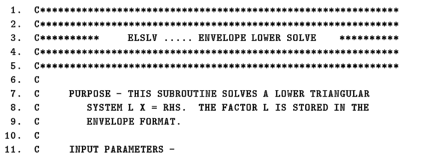
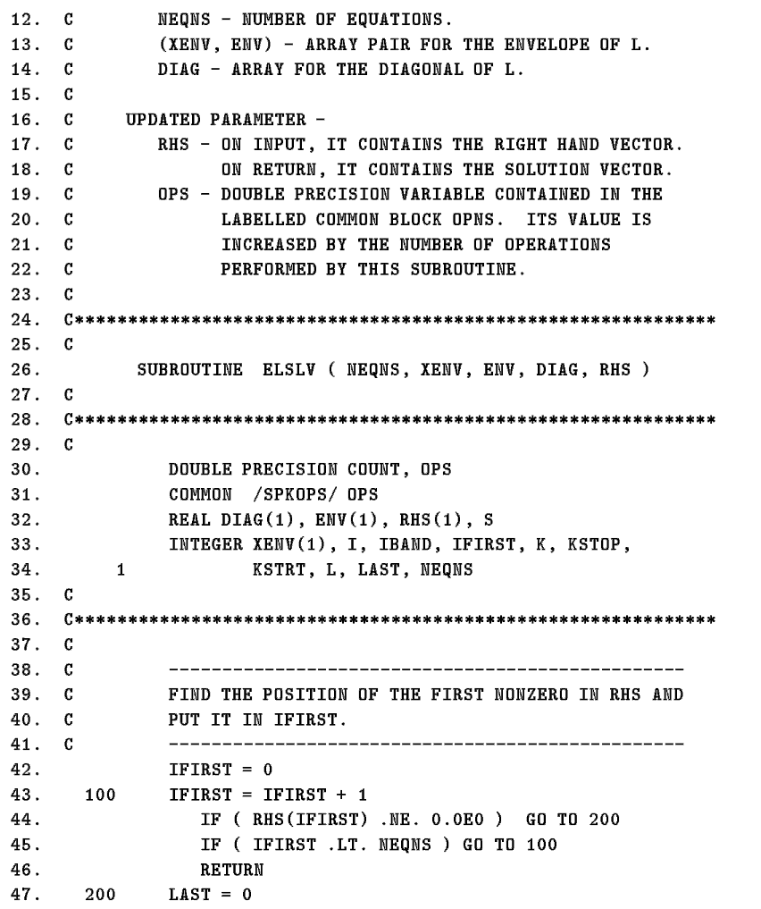
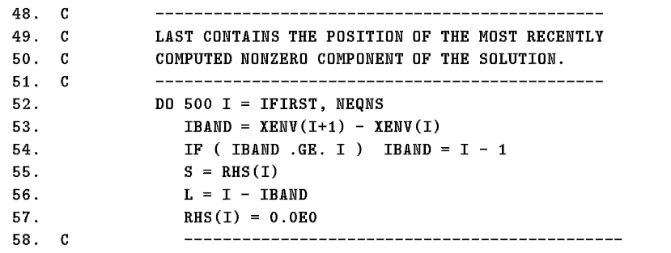
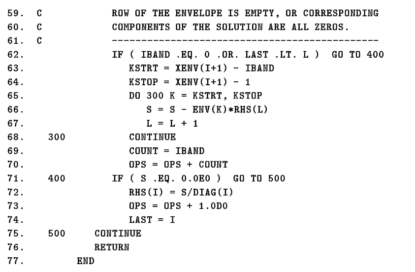
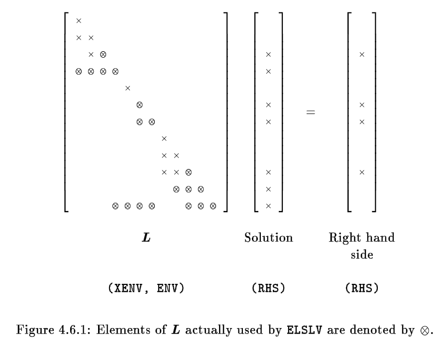
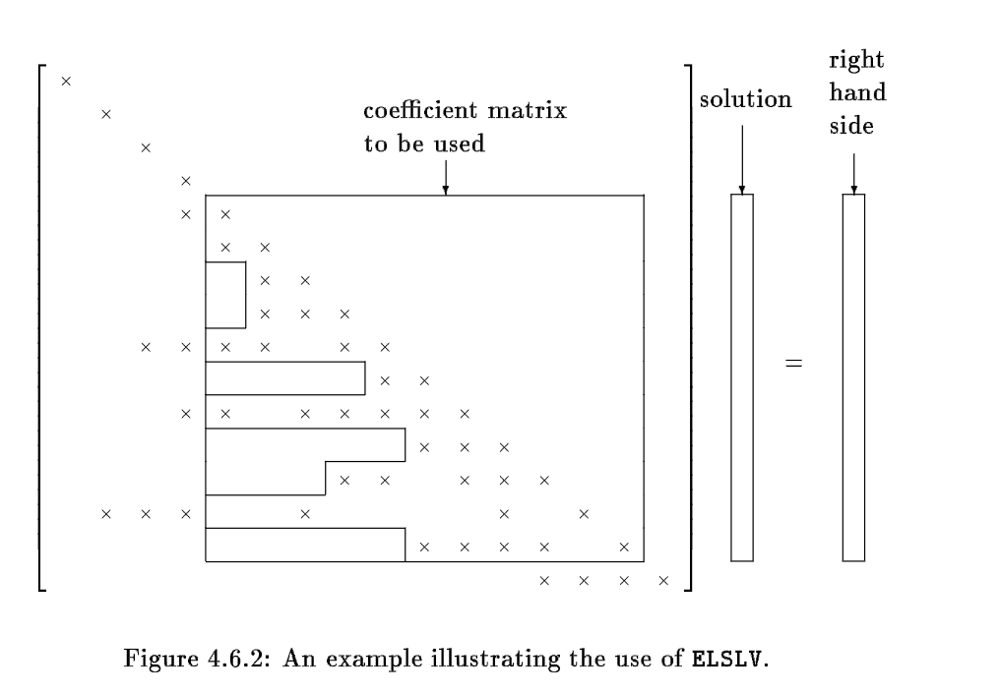
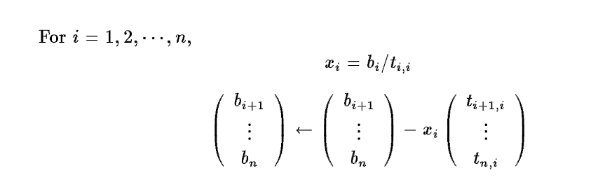
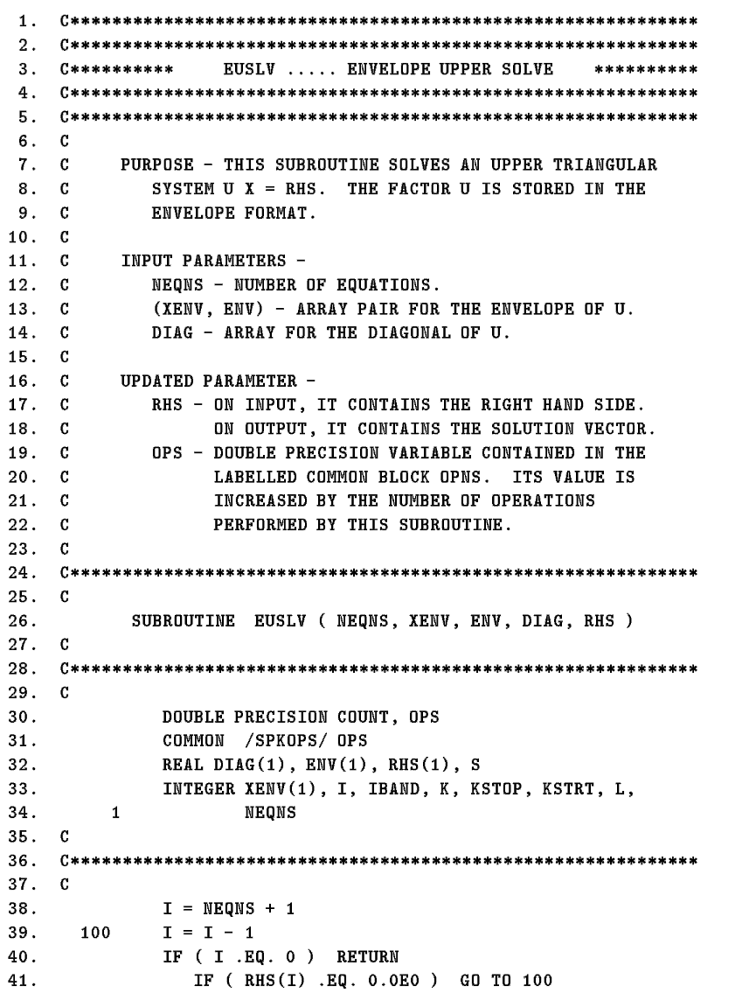
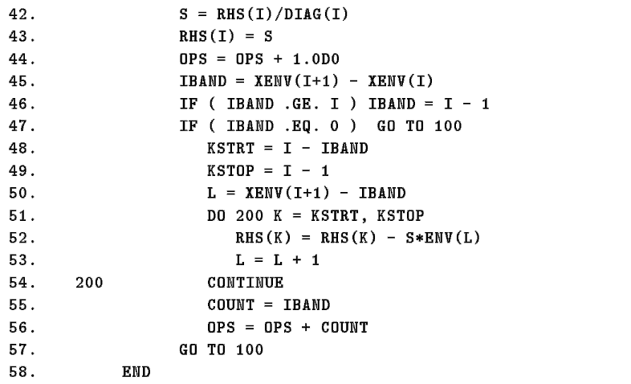

<!DOCTYPE html>


<html lang="zh-CN">


<head>
  <meta charset="utf-8" />
    
  <meta name="viewport" content="width=device-width, initial-scale=1, maximum-scale=1" />
  <title>
    稀疏矩阵算法Envelope方法二之三角方程组求解 |  VincereZhou&#39;s blog
  </title>
  <meta name="generator" content="hexo-theme-ayer">
  
  <link rel="shortcut icon" href="/images/mojie.jpg" />
  
  
<link rel="stylesheet" href="/dist/main.css">

  <link rel="stylesheet" href="https://cdn.jsdelivr.net/gh/Shen-Yu/cdn/css/remixicon.min.css">
  
<link rel="stylesheet" href="/css/custom.css">

  
  <script src="https://cdn.jsdelivr.net/npm/pace-js@1.0.2/pace.min.js"></script>
  
  

  

<link rel="alternate" href="/atom.xml" title="VincereZhou's blog" type="application/atom+xml">
</head>

</html>

<body>
  <div id="app">
    
      
    <main class="content on">
      <section class="outer">
  <article
  id="post-稀疏矩阵算法Envelope方法二之三角方程组求解"
  class="article article-type-post"
  itemscope
  itemprop="blogPost"
  data-scroll-reveal
>
  <div class="article-inner">
    
    <header class="article-header">
       
<h1 class="article-title sea-center" style="border-left:0" itemprop="name">
  稀疏矩阵算法Envelope方法二之三角方程组求解
</h1>
 

    </header>
     
    <div class="article-meta">
      <a href="/posts/f06c6ce7/" class="article-date">
  <time datetime="2022-09-06T12:26:04.000Z" itemprop="datePublished">2022-09-06</time>
</a> 
  <div class="article-category">
    <a class="article-category-link" href="/categories/%E7%90%86%E8%AE%BA%E5%AD%A6%E4%B9%A0/">理论学习</a> / <a class="article-category-link" href="/categories/%E7%90%86%E8%AE%BA%E5%AD%A6%E4%B9%A0/%E7%A8%80%E7%96%8F%E7%9F%A9%E9%98%B5/">稀疏矩阵</a>
  </div>
  
<div class="word_count">
    <span class="post-time">
        <span class="post-meta-item-icon">
            <i class="ri-quill-pen-line"></i>
            <span class="post-meta-item-text"> 字数统计:</span>
            <span class="post-count">1.8k</span>
        </span>
    </span>

    <span class="post-time">
        &nbsp; | &nbsp;
        <span class="post-meta-item-icon">
            <i class="ri-book-open-line"></i>
            <span class="post-meta-item-text"> 阅读时长≈</span>
            <span class="post-count">7 分钟</span>
        </span>
    </span>
</div>
 
    </div>
      
    <div class="tocbot"></div>


  
    <div class="article-entry" itemprop="articleBody">
       
  <link rel="stylesheet" type="text/css" href="https://cdn.jsdelivr.net/hint.css/2.4.1/hint.min.css"><p>本章节是介绍 George and Liu 书中 Envelope Method 的应用</p>
<span id="more"></span>
<p>在这一章节中，我们利用上面章节提到的 envelope storage scheme，描述执行 Cholesky 分解和求解的子程序。我们会先介绍三角方程组求解子程序 <strong>ELSLV (Envelope-Lower-Solve)</strong> 和  <strong>EUSLV (Envelope-Upper-Solve)</strong> ，再介绍矩阵分解的子程序 <strong>ESFCT (Envelope-Symmetric-Factorization)</strong> 。</p>
<h1>ELSLV</h1>
<p>这些子程序用于求解下面的下三角方程组和上三角方程组</p>
<p style=""></p><p>其中  是一个下三角矩阵，其存储方式就是之前提到的 envelope storage scheme 。</p>
<p><strong>ELSLV</strong> 脚本如下，该流程首先查找右手项 RHS 中的第一个非零元素 (<strong>IFIRST</strong>) ，之前的未知数就全部是 0。然后从 <strong>IFIRST</strong> 行循环至最后一行，采用内积原理，逐个计算  ，覆盖 RHS 相应元素的值。</p>
<p>变量 <strong>LAST</strong> 记录上一次计算的<strong>非零</strong>解的索引，这样如果本方程计算时左手项第一个非零元素大于 <strong>LAST</strong> ，那么就可以直接采用  计算解。</p>
<p>最终输出 <strong>RHS</strong> 和 <strong>OPS</strong>，这里 RHS 就是最终的解，OPS 是执行的算术操作的次数（乘法和除法）。我感觉OPS 应该采用长整型，而不是用双精度浮点数。</p>
<p>注意，下面脚本中的  ，其中的 <code>1.0D0</code> 就是  ， 是双精度的意思。</p>
<p></p>
<p></p>
<p></p>
<p></p>
<p>下面我们开始逐行解析脚本，定义变量时将 OPS 定义成了  SPKOPS 组的第一个<strong>全局变量</strong>，用于记录乘除法的操作次数。</p>
<figure class="highlight plain"><table><tr><td class="gutter"><pre><span class="line">1</span><br></pre></td><td class="code"><pre><span class="line">COMMON &#x2F;SPKOPS&#x2F; OPS</span><br></pre></td></tr></table></figure>
<p>第一步，我们查找右手项中第一个非零元素的位置</p>
<p>如果右手项全部元素均为0，则程序终止，全为0的 RHS 就是方程组的解</p>
<figure class="highlight plain"><table><tr><td class="gutter"><pre><span class="line">1</span><br><span class="line">2</span><br><span class="line">3</span><br><span class="line">4</span><br><span class="line">5</span><br><span class="line">6</span><br></pre></td><td class="code"><pre><span class="line">	  IFIRST &#x3D; 0</span><br><span class="line">100	  IFIRST &#x3D; IFIRST + 1</span><br><span class="line">	    IF( RHS(IFIRST) .NE. 0.0E0 ) GO TO 200</span><br><span class="line">	    IF ( IFIRST .LT. NEQNS ) GO TO 100</span><br><span class="line">	    RETURN</span><br><span class="line">200	  LAST &#x3D; 0</span><br></pre></td></tr></table></figure>
<p>从 IFIRST 行开始逐行求解 (之前的行解也全部为0)，采用内积原理进行求解。</p>
<p>IBAND 是这一行的 <em>bandwidth</em> ，<code> IF ( IBAND .GE. I) IBAND = I - 1</code> 这句目前看是废话，之后会有进一步的解释。</p>
<p><code> L = I - IBAND</code> 是这一行第一个非零元素的位置；<code>RHS(I) = 0.0E0</code> 将对应的解首先设置为 0 ，之后再覆盖。</p>
<p><code>LAST</code> 记录的是上一次计算的非零解的位置。</p>
<p><code>IF (IBAND .EQ. 0 .OR. LAST .LT. L) GO TO 400</code> ，这句话第一个条件很容易理解，如果 IBAND 等于 0 ，那么就只需要考虑对角线元素；第二个条件是 LAST 小于 L ，LAST 是上一次计算的非零解的位置，那就说明从 LAST + 1 到 I - 1，这些位置的解均为 0；而这一行第一个非零元素的位置 L 大于 LAST ，说明这一行非对角线元素对应的解均为0，因此也只需要考虑对角线元素。</p>
<p>如果不满足上面两个条件，接着往下走，KSTRT 和 KSTOP 是 IBAND 的第一个和最后一个元素，<code>DO 300</code> 循环根据内积原理从 S 中减去非对角线元素的乘积 (<code>S = S - ENV(K)*RHS(L)</code>) 。</p>
<p>最后，COUNT 是本次的乘除法计算次数，加入到 OPS 中</p>
<figure class="highlight plain"><table><tr><td class="gutter"><pre><span class="line">1</span><br><span class="line">2</span><br><span class="line">3</span><br><span class="line">4</span><br><span class="line">5</span><br><span class="line">6</span><br><span class="line">7</span><br><span class="line">8</span><br><span class="line">9</span><br><span class="line">10</span><br><span class="line">11</span><br><span class="line">12</span><br><span class="line">13</span><br><span class="line">14</span><br><span class="line">15</span><br><span class="line">16</span><br></pre></td><td class="code"><pre><span class="line">	  DO 500 I &#x3D; IFIRST, NEQNS</span><br><span class="line">	    IBAND &#x3D; XENV(I+1) - XENV(I)</span><br><span class="line">	    IF ( IBAND .GE. I) IBAND &#x3D; I - 1</span><br><span class="line">	    S &#x3D; RHS(I)</span><br><span class="line">	    L &#x3D; I - IBAND</span><br><span class="line">	    RHS(I) &#x3D; 0.0E0</span><br><span class="line">	    </span><br><span class="line">	    IF (IBAND .EQ. 0 .OR. LAST .LT. L) GO TO 400</span><br><span class="line">	      KSTRT &#x3D; XENV(I+1) - IBAND</span><br><span class="line">	      KSTOP &#x3D; XENV(I+1) - 1</span><br><span class="line">	      DO 300 K &#x3D; KSTRT, KSTOP</span><br><span class="line">	        S &#x3D; S - ENV(K)*RHS(L)</span><br><span class="line">	        L &#x3D; L + 1</span><br><span class="line">300	      CONTINUE</span><br><span class="line">	      COUNT &#x3D; IBAND</span><br><span class="line">	      OPS &#x3D; OPS + COUNT</span><br></pre></td></tr></table></figure>
<p>最后计算 RHS(I) ，如果此时 S 已经等于 0 ，那么 RHS(I) = 0 , 这就是我们预设的值，不用做任何事情，直接求解下一个未知数；否则的话，<code>RHS(I) = S/DIAG(I)</code> ，OPS 加1，LAST 更新为 I 。</p>
<figure class="highlight plain"><table><tr><td class="gutter"><pre><span class="line">1</span><br><span class="line">2</span><br><span class="line">3</span><br><span class="line">4</span><br><span class="line">5</span><br><span class="line">6</span><br><span class="line">7</span><br></pre></td><td class="code"><pre><span class="line">400     IF( S .EQ. 0.0E0) GO TO 500</span><br><span class="line">		  RHS(I) &#x3D; S&#x2F;DIAG(I)</span><br><span class="line">		  OPS &#x3D; OPS + 1.0D0</span><br><span class="line">		  LAST &#x3D; I</span><br><span class="line">500   CONTINUE</span><br><span class="line">      RETURN</span><br><span class="line">    END</span><br></pre></td></tr></table></figure>
<p>下图描述了本子程序的计算逻辑，其中圆圈圈起来的元素是ELSLV 实际使用的元素，可以按照上面的子程序手动模拟一下计算流程，看看是不是只用了圆圈圈起来的元素。</p>
<p>注意，在这个子流程中，我们在 <code>DO 300</code> 循环中可能执行了 一些乘以 0 的乘法，但是在大部分机器中通过做一个检查来避免这种乘法可能比不管它更加耗时。</p>
<p></p>
<p>子程序中 54 行对 <strong>IBAND</strong> 的处理（<code> IF ( IBAND .GE. I) IBAND = I - 1</code> ）解释如下，在某些环境中，<strong>ELSLV</strong> 子程序只用于求解导入的系数矩阵**(XADJ, ADJNCY)<strong>的</strong>子矩阵**的解，如下图所示， 实际是一个  的矩阵，而我们想要求解的方程组是框起来的  的子矩阵，伴随着其相应的右手项 RHS ，我们求解的脚本为</p>
<p style=""></p><p>在这个子程序中，XENV(5) 被解释为 XENV(1)， XENV(6) 被解释为 XENV(2)，依此类推。</p>
<p></p>
<h1>EUSLV</h1>
<h2 id="原理">原理</h2>
<p>我们现在查看子程序 <strong>EUSLV</strong> ，其求解  ，其中  就是 <strong>ELSLV</strong> 中的系数矩阵，这就意味着我们可以获取  的<strong>列</strong>，此时我们采用 <em>outer product form</em>，该方法描述如下</p>
<p>假设  的方程组  ，其中  是一个<strong>非奇异的</strong>下三角矩阵，并且按列存储，其计算公式如下</p>
<p></p>
<p>这种算法适用于  向量很稀疏的情况，如果在第  步一开始  就等于 0 ，那么  等于 0，我们可以整个跳过这一步。</p>
<p>同样类似于 <strong>ELSLV</strong> ，我们可以对提供的系数矩阵的子矩阵进行计算求解。</p>
<p>其求解顺序是反的，从  到  。</p>
<h2 id="脚本">脚本</h2>
<p></p>
<p></p>
<p>现在对该脚本逐行解析如下，首先这个是按照从ｎ到１的顺序，设 I 的初值设为 NEQNS + 1，进入循环。</p>
<p>如果 RHS(I) 等于0，直接跳过，进入下一个循环</p>
<figure class="highlight plain"><table><tr><td class="gutter"><pre><span class="line">1</span><br><span class="line">2</span><br><span class="line">3</span><br><span class="line">4</span><br></pre></td><td class="code"><pre><span class="line">	  I &#x3D; NEQNS + 1</span><br><span class="line">100   I &#x3D; I - 1</span><br><span class="line">	  IF (I .EQ. 0) RETURN</span><br><span class="line">	    IF (RHS(I) .EQ. 0.0E0) GO TO 100</span><br></pre></td></tr></table></figure>
<p>不然的话，按照上面的公式进行处理，下面这两行将 RHS(I) 赋值为 RHS(I)/DIAG(I) ，OPS 加1</p>
<figure class="highlight plain"><table><tr><td class="gutter"><pre><span class="line">1</span><br><span class="line">2</span><br><span class="line">3</span><br></pre></td><td class="code"><pre><span class="line">S &#x3D; RHS(I)&#x2F;DIAG(I)</span><br><span class="line">RHS(I) &#x3D; S</span><br><span class="line">OPS &#x3D; OPS + 1.0D0</span><br></pre></td></tr></table></figure>
<p>接下来处理第二步，  的第  列，就是  矩阵的第  行，而且只需要针对第   行的非零元素。</p>
<p>IBAND 是第  行的 <em>bandwidth</em> ，KSTRT 和 KSTOP 是第  行相对于 IBAND 的第一个位置和最后一个位置。</p>
<p><code>L = XENV(I+1) - IBAND</code> 其实就是 <code>XENV(I)</code>，就是 ENV 向量中第  行的第一个元素位置 。</p>
<p><code>DO 200</code> 循环中，<code>RHS(K) = RHS(K) - S*ENV(L)</code> ，就是右手项相应元素减去 RHS(I) 乘以 第  行的相应元素。</p>
<figure class="highlight plain"><table><tr><td class="gutter"><pre><span class="line">1</span><br><span class="line">2</span><br><span class="line">3</span><br><span class="line">4</span><br><span class="line">5</span><br><span class="line">6</span><br><span class="line">7</span><br><span class="line">8</span><br><span class="line">9</span><br><span class="line">10</span><br><span class="line">11</span><br><span class="line">12</span><br><span class="line">13</span><br><span class="line">14</span><br></pre></td><td class="code"><pre><span class="line">	  IBAND &#x3D; XENV(I+1) - XENV(I)</span><br><span class="line">	  IF (IBAND .GE. I) IBAND &#x3D; I-1</span><br><span class="line">	  IF (IBAND .EQ. 0) GO TO 100</span><br><span class="line">	    KSTRT &#x3D; I - IBAND</span><br><span class="line">	    KSTOP &#x3D; I - 1</span><br><span class="line">	    L &#x3D; XENV(I+1) - IBAND</span><br><span class="line">	    DO 200 K &#x3D; KSTRT, KSTOP</span><br><span class="line">	      RHS(K) &#x3D; RHS(K) - S*ENV(L)</span><br><span class="line">	      L &#x3D; L + 1</span><br><span class="line">	    CONTINUE</span><br><span class="line">	    COUNT &#x3D; IBAND</span><br><span class="line">	    OPS &#x3D; OPS + COUNT</span><br><span class="line">	  GO TO 100</span><br><span class="line">END</span><br></pre></td></tr></table></figure>
<p>一直遍历到  为止，便得到了所有未知数的解。</p>
<h1>参考文献</h1>
<ol>
<li>George A, Liu J, Ng E. Computer solution of sparse linear systems[J]. Oak Ridge National Laboratory, 1994.</li>
</ol>
 
      <!-- reward -->
      
    </div>
    

    <!-- copyright -->
    
    <div class="declare">
      <ul class="post-copyright">
        <li>
          <i class="ri-copyright-line"></i>
          <strong>版权声明： </strong>
          
          本博客所有文章除特别声明外，著作权归作者所有。转载请注明出处！
          
        </li>
      </ul>
    </div>
    
    <footer class="article-footer">
       
  <ul class="article-tag-list" itemprop="keywords"><li class="article-tag-list-item"><a class="article-tag-list-link" href="/tags/%E7%90%86%E8%AE%BA%E5%AD%A6%E4%B9%A0/" rel="tag">理论学习</a></li><li class="article-tag-list-item"><a class="article-tag-list-link" href="/tags/%E7%A8%80%E7%96%8F%E7%9F%A9%E9%98%B5/" rel="tag">稀疏矩阵</a></li></ul>

    </footer>
  </div>

   
  <nav class="article-nav">
    
      <a href="/posts/57869f4c/" class="article-nav-link">
        <strong class="article-nav-caption">上一篇</strong>
        <div class="article-nav-title">
          
            稀疏矩阵算法Envelope方法三之Cholesky分解
          
        </div>
      </a>
    
    
      <a href="/posts/e5ac741a/" class="article-nav-link">
        <strong class="article-nav-caption">下一篇</strong>
        <div class="article-nav-title">稀疏矩阵算法Envelope方法一之存储格式</div>
      </a>
    
  </nav>

   
<!-- valine评论 -->
<div id="vcomments-box">
  <div id="vcomments"></div>
</div>
<script src="//cdn1.lncld.net/static/js/3.0.4/av-min.js"></script>
<script src="https://cdn.jsdelivr.net/npm/valine@1.4.14/dist/Valine.min.js"></script>
<script>
  new Valine({
    el: "#vcomments",
    app_id: "yHN3kf7fHt5wvleM2DVoHLdY-gzGzoHsz",
    app_key: "RPIwmdftljIzOtAULwc7JCAp",
    path: window.location.pathname,
    avatar: "monsterid",
    placeholder: "靓仔，看完留个评论再走哇！\n只需要填入昵称和邮箱就可以了",
    recordIP: true,
  });
  const infoEle = document.querySelector("#vcomments .info");
  if (infoEle && infoEle.childNodes && infoEle.childNodes.length > 0) {
    infoEle.childNodes.forEach(function (item) {
      item.parentNode.removeChild(item);
    });
  }
</script>
<style>
  #vcomments-box {
    padding: 5px 30px;
  }

  @media screen and (max-width: 800px) {
    #vcomments-box {
      padding: 5px 0px;
    }
  }

  #vcomments-box #vcomments {
    background-color: #fff;
  }

  .v .vlist .vcard .vh {
    padding-right: 20px;
  }

  .v .vlist .vcard {
    padding-left: 10px;
  }
</style>

 
   
     
</article>

</section>
      <footer class="footer">
  <div class="outer">
    <ul>
      <li>
        Copyrights &copy;
        2019-2022
        <i class="ri-heart-fill heart_icon"></i> Vincere Zhou
      </li>
    </ul>
    <ul>
      <li>
        
        
        <span>
  <span><i class="ri-user-3-fill"></i>访问人数:<span id="busuanzi_value_site_uv"></span></s>
  <span class="division">|</span>
  <span><i class="ri-eye-fill"></i>浏览次数:<span id="busuanzi_value_page_pv"></span></span>
</span>
        
      </li>
    </ul>
    <ul>
      
    </ul>
    <ul>
      
    </ul>
    <ul>
      <li>
        <!-- cnzz统计 -->
        
      </li>
    </ul>

    <!-- 与只只在一起天数 -->
	<ul>
		<li><span id="lovetime_span"></span></li>
	</ul>
    <script type="text/javascript">			
        function show_runtime() {
            window.setTimeout("show_runtime()", 1000);
            X = new Date("03/04/2021 22:11:00");
            Y = new Date();
            T = (Y.getTime() - X.getTime());
            M = 24 * 60 * 60 * 1000;
            a = T / M;
            A = Math.floor(a);
            b = (a - A) * 24;
            B = Math.floor(b);
            c = (b - B) * 60;
            C = Math.floor((b - B) * 60);
            D = Math.floor((c - C) * 60);
            lovetime_span.innerHTML = "只只和男朋友在一起了 " + A + "天" + B + "小时" + C + "分" + D + "秒"
        }
        show_runtime();
    </script>

  </div>
</footer>
      <div class="float_btns">
        <div class="totop" id="totop">
  <i class="ri-arrow-up-line"></i>
</div>

      </div>
    </main>
    <aside class="sidebar on">
      <button class="navbar-toggle"></button>
<nav class="navbar">
  
  <div class="logo">
    <a href="/"></a>
  </div>
  
  <ul class="nav nav-main">
    
    <li class="nav-item">
      <a class="nav-item-link" href="/">主页</a>
    </li>
    
    <li class="nav-item">
      <a class="nav-item-link" href="/archives">归档</a>
    </li>
    
    <li class="nav-item">
      <a class="nav-item-link" href="/categories">分类</a>
    </li>
    
    <li class="nav-item">
      <a class="nav-item-link" href="/tags">标签</a>
    </li>
    
    <li class="nav-item">
      <a class="nav-item-link" href="/friends">友链</a>
    </li>
    
    <li class="nav-item">
      <a class="nav-item-link" href="/about">关于</a>
    </li>
    
  </ul>
</nav>
<nav class="navbar navbar-bottom">
  <ul class="nav">
    <li class="nav-item">
      
      <a class="nav-item-link nav-item-search"  title="搜索">
        <i class="ri-search-line"></i>
      </a>
      
      
      <a class="nav-item-link" target="_blank" href="/atom.xml" title="RSS Feed">
        <i class="ri-rss-line"></i>
      </a>
      
    </li>
  </ul>
</nav>
<div class="search-form-wrap">
  <div class="local-search local-search-plugin">
  <input type="search" id="local-search-input" class="local-search-input" placeholder="Search...">
  <div id="local-search-result" class="local-search-result"></div>
</div>
</div>
    </aside>
    <script>
      if (window.matchMedia("(max-width: 768px)").matches) {
        document.querySelector('.content').classList.remove('on');
        document.querySelector('.sidebar').classList.remove('on');
      }
    </script>
    <div id="mask"></div>

<!-- #reward -->
<div id="reward">
  <span class="close"><i class="ri-close-line"></i></span>
  <p class="reward-p"><i class="ri-cup-line"></i>请我喝杯茶吧~</p>
  <div class="reward-box">
    
    <div class="reward-item">
      
      <span class="reward-type">支付宝</span>
    </div>
    
    
    <div class="reward-item">
      
      <span class="reward-type">微信</span>
    </div>
    
  </div>
</div>
    
<script src="/js/jquery-2.0.3.min.js"></script>


<script src="/js/lazyload.min.js"></script>

<!-- Tocbot -->


<script src="/js/tocbot.min.js"></script>

<script>
  tocbot.init({
    tocSelector: '.tocbot',
    contentSelector: '.article-entry',
    headingSelector: 'h1, h2, h3, h4, h5, h6',
    hasInnerContainers: true,
    scrollSmooth: true,
    scrollContainer: 'main',
    positionFixedSelector: '.tocbot',
    positionFixedClass: 'is-position-fixed',
    fixedSidebarOffset: 'auto'
  });
</script>

<script src="https://cdn.jsdelivr.net/npm/jquery-modal@0.9.2/jquery.modal.min.js"></script>
<link rel="stylesheet" href="https://cdn.jsdelivr.net/npm/jquery-modal@0.9.2/jquery.modal.min.css">
<script src="https://cdn.jsdelivr.net/npm/justifiedGallery@3.7.0/dist/js/jquery.justifiedGallery.min.js"></script>

<script src="/dist/main.js"></script>

<!-- ImageViewer -->

<!-- Root element of PhotoSwipe. Must have class pswp. -->
<div class="pswp" tabindex="-1" role="dialog" aria-hidden="true">

    <!-- Background of PhotoSwipe. 
         It's a separate element as animating opacity is faster than rgba(). -->
    <div class="pswp__bg"></div>

    <!-- Slides wrapper with overflow:hidden. -->
    <div class="pswp__scroll-wrap">

        <!-- Container that holds slides. 
            PhotoSwipe keeps only 3 of them in the DOM to save memory.
            Don't modify these 3 pswp__item elements, data is added later on. -->
        <div class="pswp__container">
            <div class="pswp__item"></div>
            <div class="pswp__item"></div>
            <div class="pswp__item"></div>
        </div>

        <!-- Default (PhotoSwipeUI_Default) interface on top of sliding area. Can be changed. -->
        <div class="pswp__ui pswp__ui--hidden">

            <div class="pswp__top-bar">

                <!--  Controls are self-explanatory. Order can be changed. -->

                <div class="pswp__counter"></div>

                <button class="pswp__button pswp__button--close" title="Close (Esc)"></button>

                <button class="pswp__button pswp__button--share" style="display:none" title="Share"></button>

                <button class="pswp__button pswp__button--fs" title="Toggle fullscreen"></button>

                <button class="pswp__button pswp__button--zoom" title="Zoom in/out"></button>

                <!-- Preloader demo http://codepen.io/dimsemenov/pen/yyBWoR -->
                <!-- element will get class pswp__preloader--active when preloader is running -->
                <div class="pswp__preloader">
                    <div class="pswp__preloader__icn">
                        <div class="pswp__preloader__cut">
                            <div class="pswp__preloader__donut"></div>
                        </div>
                    </div>
                </div>
            </div>

            <div class="pswp__share-modal pswp__share-modal--hidden pswp__single-tap">
                <div class="pswp__share-tooltip"></div>
            </div>

            <button class="pswp__button pswp__button--arrow--left" title="Previous (arrow left)">
            </button>

            <button class="pswp__button pswp__button--arrow--right" title="Next (arrow right)">
            </button>

            <div class="pswp__caption">
                <div class="pswp__caption__center"></div>
            </div>

        </div>

    </div>

</div>

<link rel="stylesheet" href="https://cdn.jsdelivr.net/npm/photoswipe@4.1.3/dist/photoswipe.min.css">
<link rel="stylesheet" href="https://cdn.jsdelivr.net/npm/photoswipe@4.1.3/dist/default-skin/default-skin.min.css">
<script src="https://cdn.jsdelivr.net/npm/photoswipe@4.1.3/dist/photoswipe.min.js"></script>
<script src="https://cdn.jsdelivr.net/npm/photoswipe@4.1.3/dist/photoswipe-ui-default.min.js"></script>

<script>
    function viewer_init() {
        let pswpElement = document.querySelectorAll('.pswp')[0];
        let $imgArr = document.querySelectorAll(('.article-entry img:not(.reward-img)'))

        $imgArr.forEach(($em, i) => {
            $em.onclick = () => {
                // slider展开状态
                // todo: 这样不好，后面改成状态
                if (document.querySelector('.left-col.show')) return
                let items = []
                $imgArr.forEach(($em2, i2) => {
                    let img = $em2.getAttribute('data-idx', i2)
                    let src = $em2.getAttribute('data-target') || $em2.getAttribute('src')
                    let title = $em2.getAttribute('alt')
                    // 获得原图尺寸
                    const image = new Image()
                    image.src = src
                    items.push({
                        src: src,
                        w: image.width || $em2.width,
                        h: image.height || $em2.height,
                        title: title
                    })
                })
                var gallery = new PhotoSwipe(pswpElement, PhotoSwipeUI_Default, items, {
                    index: parseInt(i)
                });
                gallery.init()
            }
        })
    }
    viewer_init()
</script>

<!-- MathJax -->

<script type="text/x-mathjax-config">
  MathJax.Hub.Config({
      tex2jax: {
          inlineMath: [ ['$','$'], ["\\(","\\)"]  ],
          processEscapes: true,
          skipTags: ['script', 'noscript', 'style', 'textarea', 'pre', 'code']
      }
  });

  MathJax.Hub.Queue(function() {
      var all = MathJax.Hub.getAllJax(), i;
      for(i=0; i < all.length; i += 1) {
          all[i].SourceElement().parentNode.className += ' has-jax';
      }
  });
</script>

<script src="https://cdn.jsdelivr.net/npm/mathjax@2.7.6/unpacked/MathJax.js?config=TeX-AMS-MML_HTMLorMML"></script>
<script>
  var ayerConfig = {
    mathjax: true
  }
</script>

<!-- Katex -->

<!-- busuanzi  -->


<script src="/js/busuanzi-2.3.pure.min.js"></script>


<!-- ClickLove -->

<!-- ClickBoom1 -->

<!-- ClickBoom2 -->

<!-- CodeCopy -->


<link rel="stylesheet" href="/css/clipboard.css">

<script src="https://cdn.jsdelivr.net/npm/clipboard@2/dist/clipboard.min.js"></script>
<script>
  function wait(callback, seconds) {
    var timelag = null;
    timelag = window.setTimeout(callback, seconds);
  }
  !function (e, t, a) {
    var initCopyCode = function(){
      var copyHtml = '';
      copyHtml += '<button class="btn-copy" data-clipboard-snippet="">';
      copyHtml += '<i class="ri-file-copy-2-line"></i><span>COPY</span>';
      copyHtml += '</button>';
      $(".highlight .code pre").before(copyHtml);
      $(".article pre code").before(copyHtml);
      var clipboard = new ClipboardJS('.btn-copy', {
        target: function(trigger) {
          return trigger.nextElementSibling;
        }
      });
      clipboard.on('success', function(e) {
        let $btn = $(e.trigger);
        $btn.addClass('copied');
        let $icon = $($btn.find('i'));
        $icon.removeClass('ri-file-copy-2-line');
        $icon.addClass('ri-checkbox-circle-line');
        let $span = $($btn.find('span'));
        $span[0].innerText = 'COPIED';
        
        wait(function () { // 等待两秒钟后恢复
          $icon.removeClass('ri-checkbox-circle-line');
          $icon.addClass('ri-file-copy-2-line');
          $span[0].innerText = 'COPY';
        }, 2000);
      });
      clipboard.on('error', function(e) {
        e.clearSelection();
        let $btn = $(e.trigger);
        $btn.addClass('copy-failed');
        let $icon = $($btn.find('i'));
        $icon.removeClass('ri-file-copy-2-line');
        $icon.addClass('ri-time-line');
        let $span = $($btn.find('span'));
        $span[0].innerText = 'COPY FAILED';
        
        wait(function () { // 等待两秒钟后恢复
          $icon.removeClass('ri-time-line');
          $icon.addClass('ri-file-copy-2-line');
          $span[0].innerText = 'COPY';
        }, 2000);
      });
    }
    initCopyCode();
  }(window, document);
</script>


<!-- CanvasBackground -->


    
  </div>
<script src="/live2dw/lib/L2Dwidget.min.js?094cbace49a39548bed64abff5988b05"></script><script>L2Dwidget.init({"pluginRootPath":"live2dw/","pluginJsPath":"lib/","pluginModelPath":"assets/","tagMode":false,"debug":false,"model":{"jsonPath":"live2d-widget-model-wanko"},"display":{"position":"left","width":150,"height":300,"hOffset":80,"vOffset":-70},"mobile":{"show":false,"scale":0.5},"log":false});</script></body>

</html>